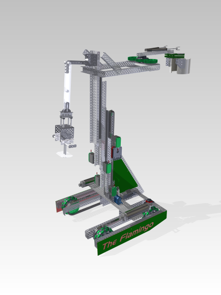
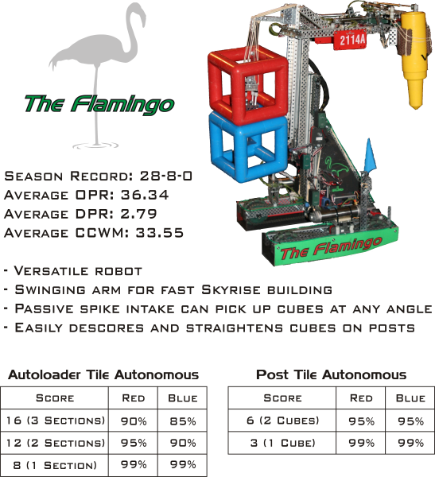

The Flamingo
Created to compete in VEX Skyrise



For more pictures from the 2015 World Championship, visit our flickr page
Created to compete in VEX Skyrise
For more pictures from the 2015 World Championship, visit our flickr page